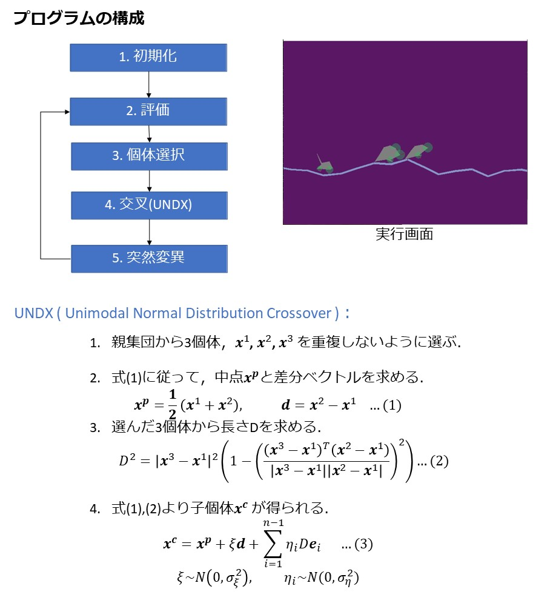

2021.01 Pythonで製作．
BoxCar2Dシミュレーションを使ってより長く走る車の設計をUNDXで求めました．
GitHub
https://github.com/aTajima98/BoxCar_UNDX
処理手順
1. 個体集団をランダムに生成
2. 個体情報から車を設計し，シミュレーションから個体の評価
3. 交叉(UNDX)の適用
4. 突然変異の適用
5. 次世代に残す個体の選択
6. 2~5の操作を収束するまで繰り返す．
UNDXについて
UNDX (Unimodal Normal Distribution Crossover)は，遺伝子表現に実数値を使う遺伝的アルゴリズムの交叉方法として考えられた．
遺伝的アルゴリズムは，選択オペレータ，交叉オペレータ，突然変異オペレータから構成されるが，UNDXは交叉を主探索オペレータとして考える．
UNDXの交叉方法は，3つの親から正規乱数を使用して2つの子個体を生成する． 3つの親のうち，2つの親を結ぶ直線を主探索軸とし，その周辺に子個体が生成される． UNDXの実装は[Ono 2003]を参考に行った．
[Ono 2003]Ono, Isao, Hajime Kita, and Shigenobu Kobayashi. "A real-coded genetic algorithm using the unimodal normal distribution crossover." Advances in evolutionary computing. Springer, Berlin, Heidelberg, 2003. 213-237.
コーディングについて
Pythonでコーディングを行いました．プログラムは，GitHubに置いてあります．
選択，交叉，突然変異などの操作を関数で独立して書いているため，使用する交叉や突然変異の変更が問題に設定によらず容易に行うことができます．